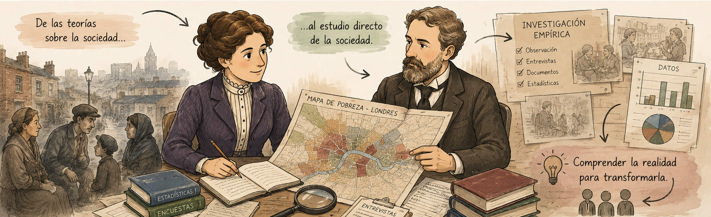

Texto

Después de sus primeras influencias intelectuales, Beatrice Webb comenzó a interesarse cada vez más por las condiciones de vida de los trabajadores. Ya no quería limitarse a discutir ideas sobre la sociedad, sino observar cómo funcionaban realmente las relaciones entre pobreza, trabajo y organización social.
Una de sus primeras experiencias importantes fue su estudio en Bacup, una zona industrial relacionada con la producción textil.
Allí investigó las cooperativas de consumo, organizaciones creadas por trabajadores para comprar productos en conjunto y reducir costos. Esta experiencia le permitió acercarse al mundo obrero y observar cómo los trabajadores podían organizarse colectivamente para mejorar sus condiciones.
Sin embargo, todavía no contaba con un método de investigación completamente desarrollado. Sus observaciones eran importantes, pero necesitaba una forma más sistemática de estudiar la sociedad.
Ese cambio llegó cuando comenzó a trabajar con Charles Booth.
Booth estaba realizando una gran investigación sobre la vida de la población trabajadora de Londres, buscando comprender la pobreza a partir de datos concretos y no de opiniones. Su trabajo utilizaba entrevistas, observación directa, estadísticas y documentos.
La colaboración con Booth fue fundamental para Webb porque le enseñó una nueva forma de estudiar los problemas sociales: primero observar la realidad, recoger información y luego construir explicaciones.
Gracias a estas investigaciones empezó a cambiar su forma de entender la pobreza. En lugar de verla como un problema causado solamente por las decisiones individuales, comenzó a verla como un fenómeno relacionado con las condiciones sociales y económicas.
Esta experiencia sería la base de su futuro método sociológico y de su alejamiento del individualismo de Spencer.